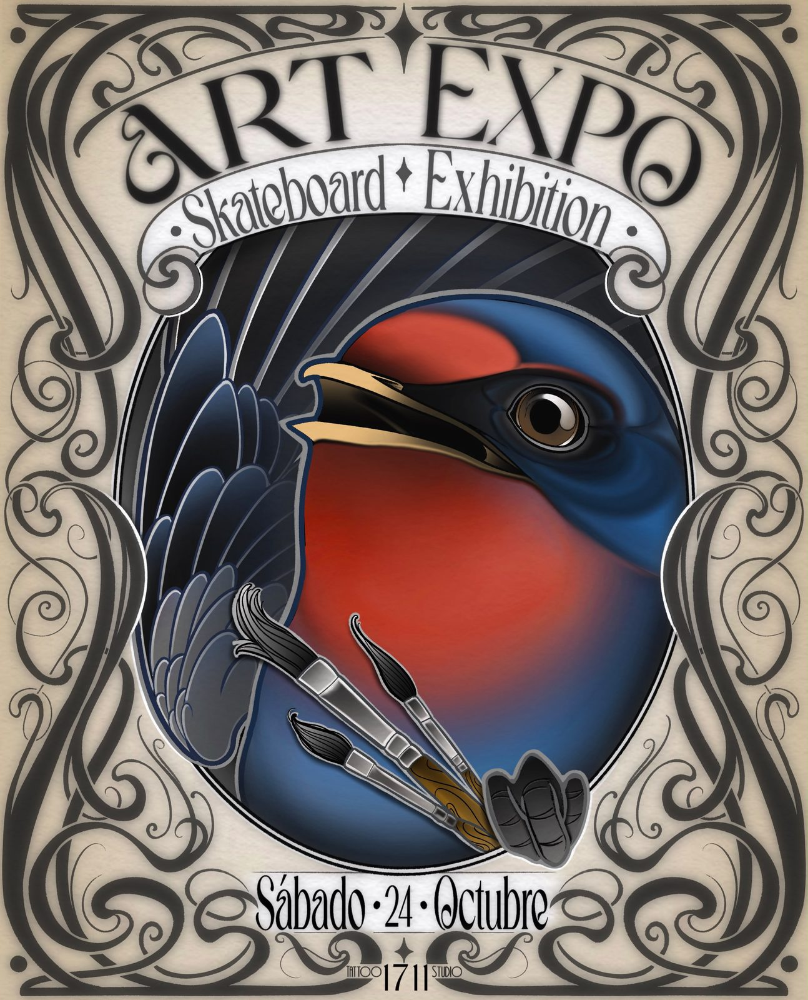
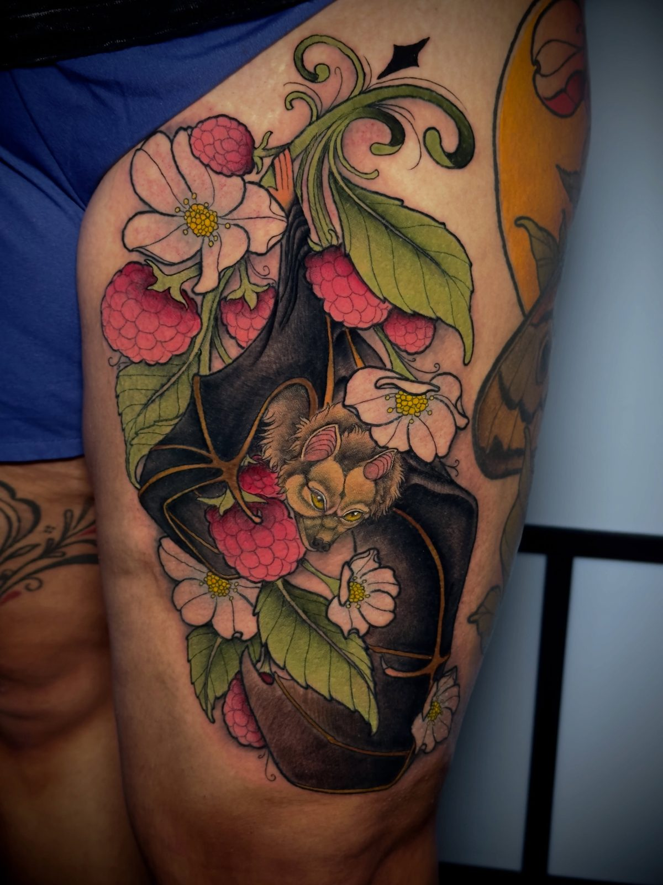
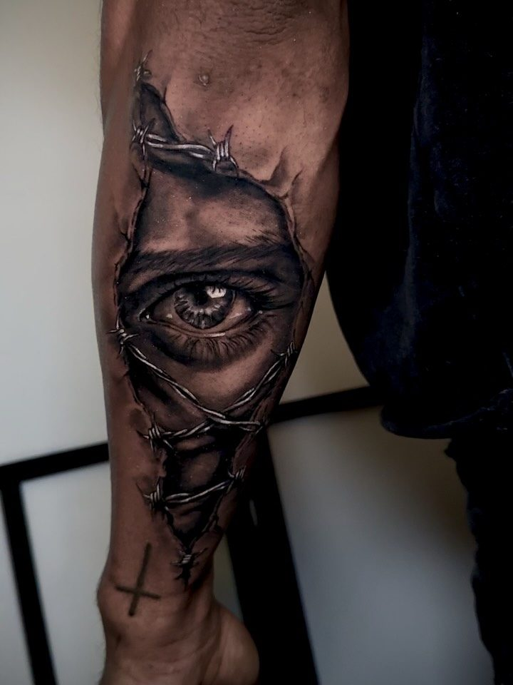
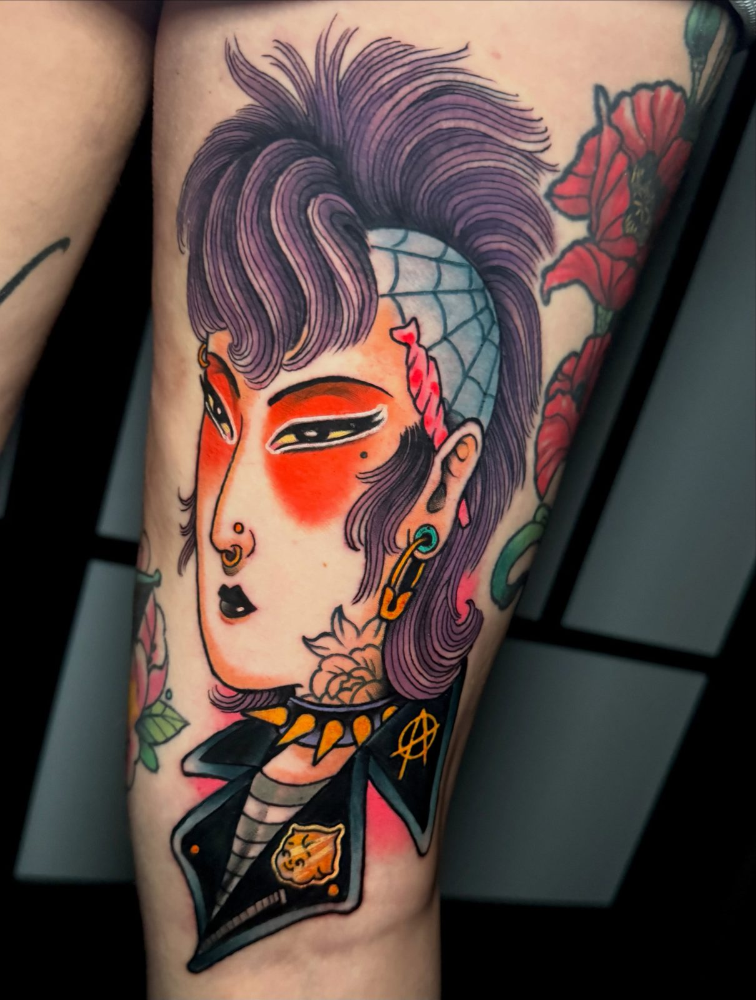
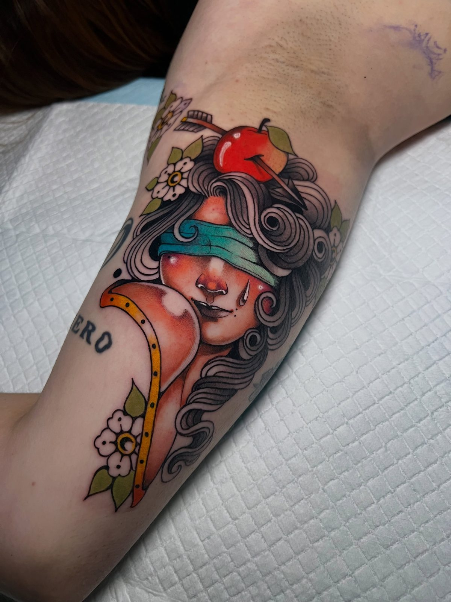
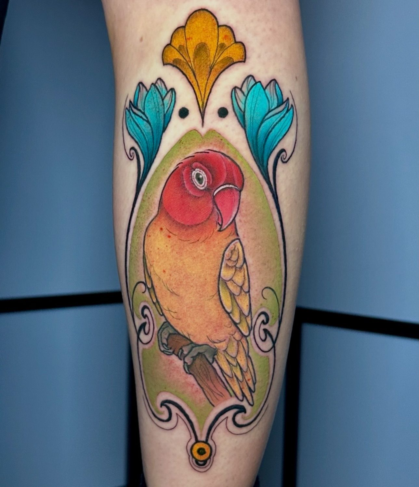
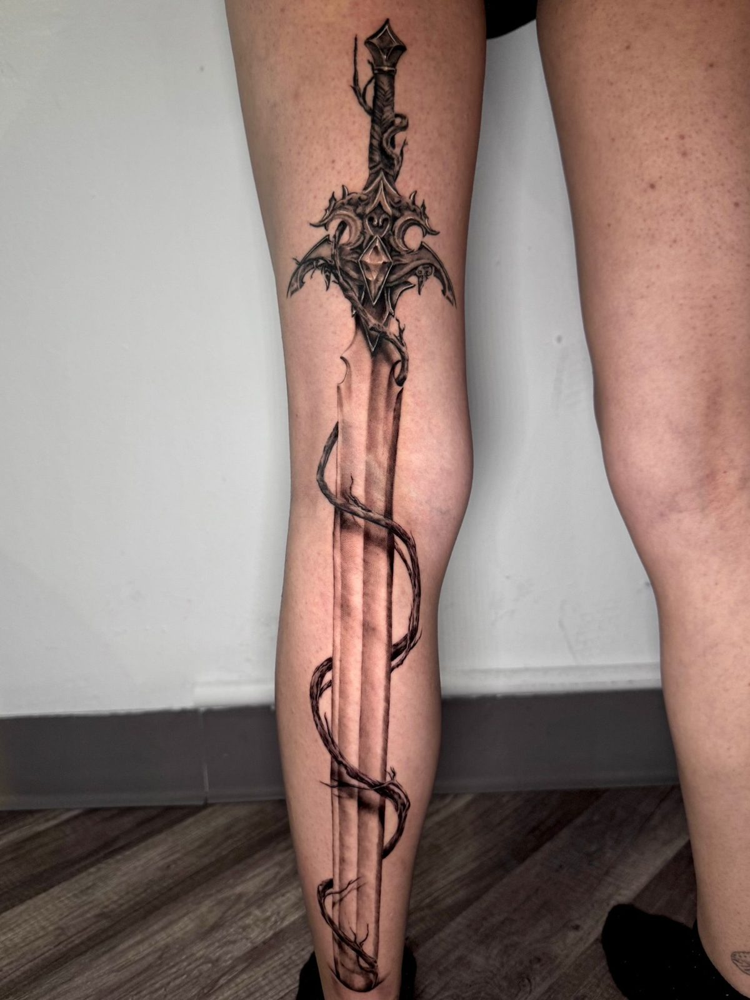
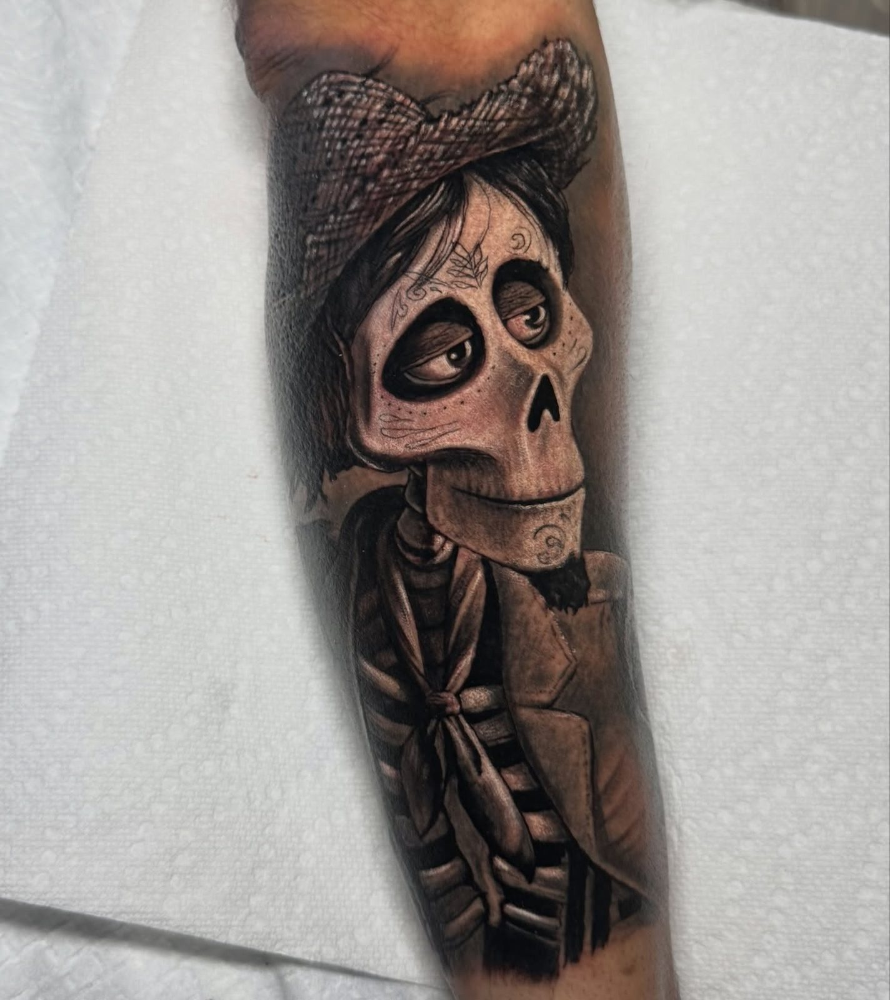

San Juan · desde 2013
1711
Estudio de tatuajes en San Juan desde 2013. El shop de Papito.
30.7K seguidores en Instagram

San Juan · desde 2013
Estudio de tatuajes en San Juan desde 2013. El shop de Papito.
Lo que hacemos



Diseños únicos creados para ti.


Transformamos tatuajes viejos en arte nuevo.


Sombreados y realismo en grises.

Tatuajes vibrantes a todo color.
Galería

Quiénes somos
1711 Tattoo Studio en San Juan, Puerto Rico. El shop de Papito desde 2013. Tatuajes personalizados, cover-ups, black & grey y color con un equipo de artistas profesionales. Lunes a sábado 1-6PM. Escríbenos por WhatsApp en nuestro Instagram.
Hablar con nosotrosPreguntas frecuentes
Estamos en San Juan, Puerto Rico.
Tatuajes personalizados y más: Tatuajes personalizados, Cover-ups, Black & grey.
Escríbenos por WhatsApp al WhatsApp en Instagram o llena el formulario de contacto y te respondemos por WhatsApp.
Sí, síguenos en Instagram como @@1711tattoostudio.
Sí, tatuajes personalizados y cover-ups. El shop de Papito desde 2013: escríbenos por WhatsApp desde nuestro Instagram.
Contacto
Llena el formulario y te contactamos por WhatsApp al instante.